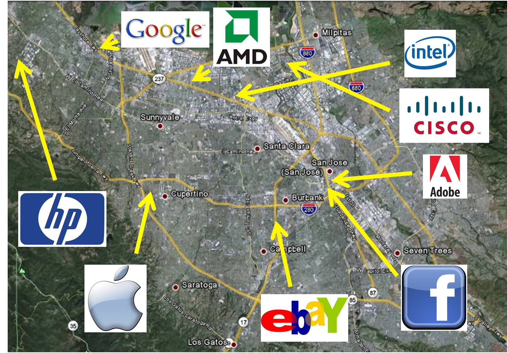
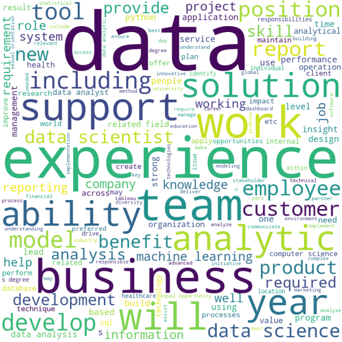

In the current economic crisis this year, many banks have gone bankrupt and many giant companies have also laid off a large number of employees, that making it exceptionally difficult and competitive for us to find employment. So, how can we find a job in this situation?
Introduction
In recent monthes, many giant companies like google, amazon, meta had laid off for thousands of their employees. A lot of them are data-related positions, such as data analyist, data scientist, or machine learning engineer. The influx of them into the market has made it even more difficult for us to find jobs in a market that already has limited demand. Thus, its more important to seek job efficiently, and I will use data to help explain how to find jobs efficiently in this website
Location
Choosing the right location when seeking a job is a crucial decision that can have a significant impact on career trajectory and success in seeking jobs. Therefore, it is important to carefully consider various factors such as the job market, industry trends, and personal priorities when deciding on a job location. Especially in this year, it's more crucial to learn which places offer more opportunities for your position

The industry trend for different locations can significantly varied, which can greatly affect the job seeking process. You can't expect you will have lot of opportunities related to data science in Wyoming! Thus, if we are seeking the jobs like data scientist or data analyist, we first need to find out which state will offer the most opportunities, which implies we will have greater chance to find a job at that place. In the all of rest analysis, the data-realted jobs includes big-data and cloud computing field,block chain field,dataanalyst, data scientist, deep learning field, machine learning field, natural language processing field , neural networks field,reinforcement learning field
Figure 1: The distribution of data-related jobs in different states
From the Figure 1, it indicates most data related jobs released on 04-14 are locates in California, besides, there also has some opportunities in DC Metropolitan area, and New York City. Thus, if we want to seek data-related jobs those places are top picks and will esclating our chance to get the job.
Company
Choosing the right company to work for is crucial in building a fulfilling and successful career. The company you work for can have a significant impact on your professional growth, work-life balance, job satisfaction, and overall well-being. Besides, choosing the right company is also strongly related to our topic of job seeking
It's indispensible to focus on element of companies for job seeking process. There are hundreds and thousands companies offere jobs for data-related works. Some of them are start-ups and some of them are giant companies and Microsoft and Googles. If we spend too much time on companies that no longer offer jobs it will be super time consuming and frustrating. I will still use the data posted on 04-14 for all data-related jobs nationalwide for analysis.
Figure 2: The distribution of data-related jobs in different companies
The Figure 2 lists top 10 companies that released most job positions related to data. It's noticable that the opportunities for giant companies is stabled but also means extreamly competitive. The No.1 company in this graph is a start-up company and lot of companies on this graph are also start ups. Besides, those start up companies wouldn't face that extreamly competition and thus have more chances to get hired. Thus, under current market situation, it seems to be a good strategy to find more start-up companies.
Figure 3: Number of jobs posted on 04/14 for different companies for different position
The Figure 3 also prove the statemnt under Figure 2. For almost each position related to data. The supply from giant companies like Google, Apple, and Walmart are stable but competitive. While the job supply from start-up like Arisen Corportion, Up-work are also not bad and less competitive. Thus seeking data-related job from start-up companies seems to be a more wise choice, and it also deserves more focus.
Platform
Various of platform (medium) takes an indispensible roles in job seeking process. Almost all companies post their job information and requirement on those platform. Thus, choosing the right platform also help us from finding a job
Using a single job medium exclusively can lead to extremely inefficient job seeking. Thus, we need to identify which platforms or mediums different companies prefer to use when posting job openings for different positions. Once we understand the underlying patterns, it will greatly benefit our job seeking process.
Figure 4: Number of jobs posted on 04/14 for different position on different medium
Some people only uses medium like Linkedin or hand-shake for seeking jobs (like me), however, from Figure 4 it shows only data analyist job has most posts via Linkedin, while other jobs like big data computation and machine learning prefer more on ZipRecruiter and StartUp. Thus, this graph plays an very important indicator for finding jobs, people can refer to this chart to identify the most suitable platform for the job positions they wish to apply for.
Experience
Each jobs requires different qualifications, for data-related jobs, what qualifications do those companies most want in applicants?
In order to find out which qualities that companies want most, I traversal the all job requirements for thos data-related positions and summary with the most mentioned qualifications

Figure 5: Most mentioned words in job description
The Figure 5 indicates the data-related jobs require "Data" and "Experience" most, the data may imply the data science tuition and view. The Experience may imply the project experience on how to analyze, build model by data. Thus, in order to become more competitive in data-related jobs, we should gain more experience on doing more projects that not limited by our courses, but should find them online. The data intuitive and solution mentioned in graph is also important. Because the companies provide data job opportunities with the intention of allowing employees to utilize their expertise in data science viewe and tuition to help increase company benefit, it is particularly important during the hiring process to cultivate a unique perspective for problem-solving and proficiency in "data science" view.
Conclusion
Searching for a job is an extremely time-consuming and challenging process, especially in the current financial crisis. Therefore, we need to adopt better strategies in our job seeking process. This includes selecting suitable locations, identifying appropriate companies, utilizing more and better platforms or mediums, and improving our specific professional skills.